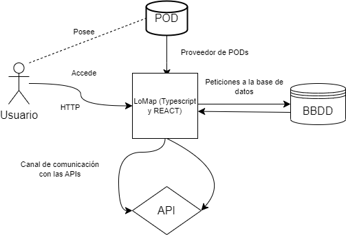
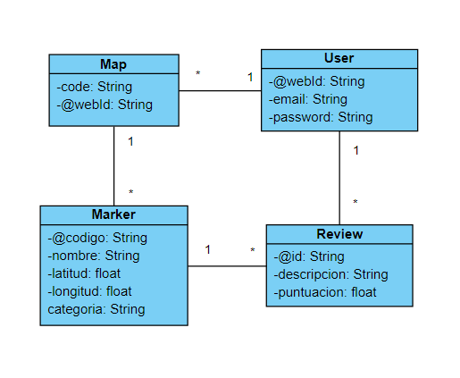
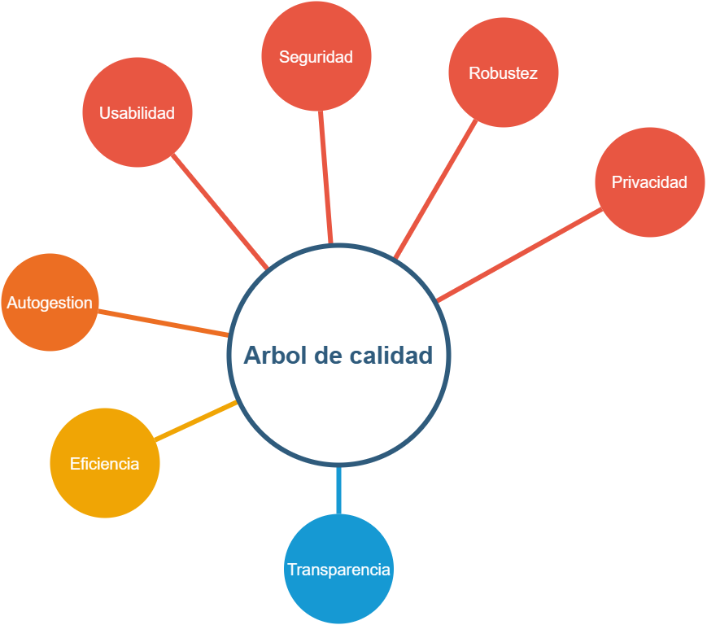

1. Introduction and Goals
LoMap es un proyecto de ASW que consiste en la creacion de un sistema en el que los ciudadanos dispongan de un mapa personalizado con lugares, negocios… de la ciudad de Bruselas. Los miembros son:
-
Ruben Diaz Zapico - UO283204
-
Alonso Antuña Gómez-UO282834
-
Javier Novella Tomás-UO282944
-
Sergio Moro Muñiz - UO284622
-
Pablo Fernandez Diaz-UO271116
1.1. Resumen de Requisitos
La aplicación se ejecutará en el servidor, y la información del usuario se almacenará en su pod. Asi mismo, habra una base de datos centralizada cuya informacion solo contendra lo necesario para acceder al pod de cada usuario. Todos estos requisitos son compatibles con el proyecto SOLID, ya que la información de los usuarios no se almacena de forma centralizada.
-
Los usuarios pueden añadir lugares en categorías diferentes: tiendas, bares, restaurantes, paisajes, monumentos, etc.
-
Los usuarios serán capaces de mostrar lugares en una ventana tipo mapa.
-
Los usuarios pueden asociar puntuaciones, comentarios, fotos, etc. sobre los lugares añadidos.
-
Se podrán gestionar desde la aplicación los accesos a la información que comparten con otros usuarios, como sus amigos o grupos de amigos.
-
La información sobre un lugar almacenada por cada usuario no deberá estar centralizada, sino que se almacenará en el pod de cada usuario.
-
Si fuese necesario, se podría almacenar alguna información de forma centralizada por razones de rendimiento tratando de respetar la privacidad de los usuarios en la medida que sea posible.
-
El sistema permitirá a los usuarios ver lugares e información sobre dichos lugares tomada de sus amigos.
-
El sistema permitirá visualizar el mapa incorporando filtros, por ejemplo, por categoría, amigos, etc.
-
Permitir a los usuarios crear rutas (por ejemplo, rutas para hacer compras o tomar algo)
-
Permitir a los usuarios comparar mapas, por ejemplo, comparar ciertas categorías como sólo restaurantes.
-
Permitir a los establecimientos (restaurantes, tiendas, bares, etc. ) crear su propio pod para que otras personas puedan conectarse a ellos.
-
Crear un boletín de noticias (newsfeed) a partir de los lugares conectados.
-
Añadir características de gamificación (recoger información de lugares, descubrir nuevos lugares, etc. )
-
Crear múltiples mapas entre grupos de usuarios (por ejemplo, mapas de familia, de compañeros de viaje, …)
-
Conectar con el libro de direcciones para chequear información sobre lugares o realizar recomendaciones de lugares
-
Añadir roles (ciudadano, turista, dueño de negocio,…)
-
Oportunidades para dueños de negocios, por ejemplo, crear un mapa con lugares recomendados cerca de un establecimiento, bares para tomar algo después de realizar la compra, etc.
1.2. Objetivos de calidad
| Objetivos de calidad | Motivación | Importancia |
|---|---|---|
Seguridad |
Garantizar la seguridad de los datos del cliente para aumentar su confianza y mantener a salvo su privacidad |
Alta |
Robustez |
Buen manejo de excepciones para mejorar la experiencia del usuario |
Alta |
Usabilidad |
La aplicación ha de ser intuitiva y de fácil manejo para gente de todo tipo de nivel |
Alta |
Transparencia |
Todo el proyecto sera visible |
Bajo |
Eficiencia |
La aplicación sera lo más eficiente posible usando los menores recursos posibles |
Media |
-
Los usuarios pueden añadir lugares en categorías diferentes: tiendas, bares, restaurantes, paisajes, monumentos, etc.
-
Los usuarios serán capaces de mostrar lugares en una ventana tipo mapa.
-
Los usuarios pueden asociar puntuaciones, comentarios, fotos, etc. sobre los lugares añadidos.
-
Se podrán gestionar desde la aplicación los accesos a la información que comparten con otros usuarios, como sus amigos o grupos de amigos.
-
La información sobre un lugar almacenada por cada usuario no deberá estar centralizada, sino que se almacenará en el pod de cada usuario.
-
Si fuese necesario, se podría almacenar alguna información de forma centralizada por razones de rendimiento tratando de respetar la privacidad de los usuarios en la medida que sea posible.
-
El sistema permitirá a los usuarios ver lugares e información sobre dichos lugares tomada de sus amigos.
-
El sistema permitirá visualizar el mapa incorporando filtros, por ejemplo, por categoría, amigos, etc.
-
Permitir a los usuarios crear rutas (por ejemplo, rutas para hacer compras o tomar algo)
-
Permitir a los usuarios comparar mapas, por ejemplo, comparar ciertas categorías como sólo restaurantes.
-
Permitir a los establecimientos (restaurantes, tiendas, bares, etc. ) crear su propio pod para que otras personas puedan conectarse a ellos.
-
Crear un boletín de noticias (newsfeed) a partir de los lugares conectados.
-
Añadir características de gamificación (recoger información de lugares, descubrir nuevos lugares, etc. )
-
Crear múltiples mapas entre grupos de usuarios (por ejemplo, mapas de familia, de compañeros de viaje, …)
-
Conectar con el libro de direcciones para chequear información sobre lugares o realizar recomendaciones de lugares
-
Añadir roles (ciudadano, turista, dueño de negocio,…)
-
Oportunidades para dueños de negocios, por ejemplo, crear un mapa con lugares recomendados cerca de un establecimiento, bares para tomar algo después de realizar la compra, etc.
1.3. Stakeholders
| Role/Name | Contact | Expectations |
|---|---|---|
Profesores |
-Jose Emilio Labra -Cristian Augusto Alonso -Irene Cid Rico -Pablo González |
Puesta en practica de los conocimientos y explicaciones realizadas en clase para la realización del proyecto |
Clientes |
Clientes |
Aplicación sencilla, con una buena usabilidad, con todas las funcionalidades requeridas y que protega/asegure los datos introducidos |
Administrador |
Administrador |
Manejar una aplicación robusta, bien hecha y eficiente que permita solucionar futuros problemas/errores |
Equipo |
-Javier Novella Tomás -Ruben Díaz Zapico -Pablo Fernádez Díaz -Sergio Moro Muñiz -Alonso Antuña Gómez |
Mejorar la técnica de trabajo y cooperación en un equipo de desarrollo |
1.4. Explicación sobre la Arquitectura
React |
Usamos React para el front-end, para la interfaz gráfica de usuario. |
SOLID |
Con SOLID,este es un requisito sobre las tecnologías que usar, los usuarios guardaran su información usando PODs. De esta forma, pueden permitir o rechazar la solicitud de acceso a los datos. |
Docker |
La aplicación usará docker. |
GitHub |
Usaremos github para el control de versiones y comunicarnos. |
TypeScrypt |
TypeScript para escribir el back-end, TS es una evolución de javascript con tipos. |
Node.js |
Framework de javascript usado para el back-end. |
1.5. Organización del equipo
Organización |
Explicación |
Reuniones |
Es la primera vez que trabajamos juntos en un proyecto de estas dimensiones, tanto por complejidad en el software como por sus tecnologías. Somos un equipo de 5 personas. |
Tiempo |
Tiene un tiempo de entrega corto, ya que el desarrollo completo debe hacerse en unos 4 meses. |
Fechas Límite |
Dependiendo el mes y la semana, debemos ir entregando versiones del producto final, hasta que la entrega final llegue. |
1.6. Puntos a tener en cuenta
Estetica y uso |
La interfaz gráfica debe ser facil de usar, ademas de tener un alto grado de accesibilidad y usabilidad. |
Documentación |
Usamos Arc42 para la documentación. |
Solid |
La aplicación sigue los principios SOLID. |
TypeScript |
Usamos los lenguajes TypeScript/JavaScript y alguno de sus frameworks. |
MVC |
Usaremos el modelo vista-controlador. |
W3C AAA |
Nuestra aplicación seguira el convenio del W3C triple AAA, es decir, será tanto accesible como usable para cualquier tipo de público. |
2. System Scope and Context
2.1. Business Context

2.2. Contexto tecnico
Nuestra aplicación LoMap sigue los principios de descentralización de datos personales SOLID al almacenar datos personales en el POD independiente de cada usuario. El front-end se desarrolla utilizando el framework React, el cual implementa componentes propios diseñados o creados, el lenguaje utilizado para desarrollar diversas funciones en pantalla es TypeScript. Para el back-end, usando Node.js express, hacemos todas las transacciones con la base de datos. La mayoría de las solicitudes se realizan mediante el protocolo web HTTP. Usaremos una API externa.
El siguiente diagrama muestra los componentes de la aplicación afectados por cada tecnología.

3. Soluciones Estratégicas
Para la reaalización de LoMap hemos tomado la decisión de desarrollarlo en TypeScript. TypeScript es un superconjunto de JavaScript cuyo punto más resaltable es el uso de tipado.
4. Vista de bloques
4.1. Sistema general
- Motivacion
-
Describimos el alcance y contexto de nuestra aplicación.
- Bloques de construcción contenidos
-
-
LoMap: Nuestra aplicacion que gestiona lugares interesantes para los usuarios
-
Base de datos: Se guardara la información necesaria para el funcionamiento de la aplicación, ya que la otra parte ira en los pod.
-
POD: Lugar donde se almacenará la informacion de los usuarios, de forma mas personal(lugares o sitios de summo interes).
-
- Interfaces importantes
-
-Para conectarnos a los mapas y añadir etiquetas usaremos la api de mapas correspondiente(mapbox o googlemaps, aun por decidir).
4.2. Nivel 2
- Motivacion
-
A continuación mostramos como ira implementada nuestra aplicacion
- Bloques de construcción contenidos
-
-
Front-End: Para la interfaz de usuario, como tecnología usaremos React.
-
Back-End: Aqui ira implementada la gestion de los datos y la propia base de datos, usaremos como tecnología Node.js
-
- Interfaces importantes
-
-
Con las diferentes apis conectaremos el front-end y el back-end.
-
4.3. Nivel 3
- Motivacion
-
A continuación mostramos los modulos del back-end
- Bloques de construcción contenidos
-
-
Main: Con él comunicamos como forma principal el front-end y el back-end.
-
BBDD: Se encarga de la comunicación con al base de datos.
-
Solid: Interactuará con el Pod del usuario.
-
- Interfaces importantes
-
-
Para conectarnos a los mapas y añadir etiquetas usaremos la api de mapas correspondiente(mapbox o googlemaps, aun por decidir).
-
Para conectarnos a los pods usaremos las herramientas que nos facilite solid y las que mas nos ayuden dependiendo de nuestra arquitectura.
-
5. Runtime View
6. Escenario de ejecución 1. Registro de nuevo usuario

6.1. Escenario de ejecución 2. Inicio de sesion de usuario

6.2. Escenario de ejecución 3. Añadir localización
Las ubicaciones guardadas pueden ser vistas más tarde por el usuario y sus amigos a través de la aplicación web.
El usuario puede agregar una ubicación a su mapa.

6.3. Escenario de ejecución 4. Eliminar localización
Las ubicaciones agregadas al mapa luego serán eliminadas por el usuario a través de la aplicación.

6.4. Escenario de ejecución 5. Usuario visualiza una de sus localizaciones.

7. Deployment View
7.1. Infrastructure Level 1
<Overview Diagram>
- Motivation
-
<explanation in text form>
- Quality and/or Performance Features
-
<explanation in text form>
- Mapping of Building Blocks to Infrastructure
-
<description of the mapping>
7.2. Infrastructure Level 2
- Motivacion
-
Se ha intentado plantear el sistema de la manera más descentralizada posible y mantener la privacidad del usuario de manera más optima posible.
- Caracteristicas de calidad y/o rendimiento
-
Como nuestro objetivo es tener un sistema optimo tanto en cuanto a rendimiento como seguridad y otras características, se ha intentado buscar y comenzar a usar la mejor infraestructura posible.
- Mapeo de Bloques de Construccion a Infraestructura
| Building Block | Mapping |
|---|---|
MongoDB |
La base de datos elegida, sera usada por la aplicacion y estara dentro de un servidor. |
RestAPI |
Interfaz entre sistemas para el intercambio de peticiones. |
WebApp |
La parte donde el usuario podra interactuar, el cual ejecuta el navegador web. |
Web browser |
Depende de la eleccion del usuario, y unica forma de acceder a la aplicacion. |
POD |
"Almacenes" para guardar los datos de los usuarios de forma segura. |
8. Conceptos Transversales
8.1. Modelo de dominio

8.2. Conceptos de seguridad y privacidad
-
Privacidad: los datos introducidos serán privados y no visibles. Las opiniones y marks creados por el usuario solo podrán ser visualizados por los amigos añadidos.
-
Seguridad: los datos serán completamente seguros, siendo almacenado en PODs individuales y no en una base de datos centralizada.
8.3. Arquitectura y patrones de diseño
-
Patrón fachada: para facilitar el desarrollo del proyecto por parte del equipo, haremos uso del patrón fachada para conectar el back con el front.
-
Pods: uso de pods para guardar la información personal de cada usuario.
-
Interoperabilidad entre proyectos: el proyecto se intentará hacer de tal forma que la información alamacenada pueda ser usada de un proyecto a otro.
-
Base de datos: para la realización de este proyecto usareos una base de datos centralizada para la mejoría del rendimiento.
8.4. Experiencia usuario
-
Interfaz simple: trataremos de realizar una interfaz limpia, capaz de ser usada por cualquier usuario.
-
Capacidad de marcar y opinar de sus sitios favoritos con mapas.
-
Ver opiniones y recomendaciones de amigos.
-
Filtrar marcadores y opiniones por tipos de local.
8.5. Conceptos de desarrollo
-
Front-end: parte del desarrollo que se encarga de la parte visible de la aplicación. Esta parte se centra en la creación de la interfaz de usuario.
-
Back-end: parte del desarrollo que se centra en la lógica del proyecto y manejo de base de datos.
-
Testeabilidad: será un proyecto desarrollado en base a la comprobación de test. Estos test pueden ser de funcionalidad o de rendimiento.
8.6. Coceptos operacionales
-
Rendimiento: es la medida de la eficacia en que la aplicación usa los recursos del sistema para hacer lo que ha diseñado para hacer. Este parámetro se tratará de mejorar mediante pruebas.
9. Design Decisions
10. Quality Requirements
10.1. Quality Tree

10.2. Quality Scenarios
11. Riesgos y Deudas Técnicas
11.1. Tabla de riesgos
| Prioridad | Riesgo | Explicación | Solución |
|---|---|---|---|
1 |
SOLID |
Nadie del equipo ha utilizado SOLID, por lo que todos carecemos de conocimiento sobre este framework. |
Verse videos tutoriales en youtube para orientarnos en el funcionamiento de SOLID. |
2 |
React |
Nadie tiene experiencia con REACT y algunos miembros del equipo no conocen bien JavaScript. |
Adaptar el conocimiento de los miembros que si conocen JavaScript a TypeScript y los que no lo conocen informarse un poco a cerca de este lenguaje. |
3 |
MongoDB |
Nunca hemos trabajado con esta base de datos en concreto pero todos los miembros ya han utilizado una no relacional. |
Comprender su funcionamiento mirando documentación al respecto. |
4 |
PODs |
Ningun miembro del equipo ha usado PODs antes ni sabemos como utilizarlos e incorporarlos en el proyecto. |
Buscar videos en youtube y mirar la documentacion de SOLID. |
5 |
GitHub |
Aunque todo el equipo trabaja bien con GitHub falta soltura a la hora de realizar ciertas acciones como commits etc… |
Esto no supone un gran inconveniente, se resolverá a medida que nos vayan saliendo los problemas y haciendo alguna prueba con la documentacion. |
6 |
Heroku |
Nunca nadie del equipo ha realizado ningún despliegue con Heroku. |
Los miembros del equipo se apoyarán en la documentación oficial donde se encuentra explicado. |
11.2. Tabla deuda técnica
| Riesgo | Explicación | Solución |
|---|---|---|
Conflictos en gitHub |
A la hora de mergear puede dar fallos |
Hacer reuniones para solucionar los conflictos para asegurarse no cometer errores |
Robustez |
Al tener poca experencia en trabajar en este tipo de proyectos en grupo puede darse la situación de que el código no quede robusto |
Realizar multiples reuniones para intentar hacerlo lo mejor posible |
Retardo al hacer login |
Al cargar los datos del POD de inrupt.net se provoca cierto retardo |
Tener una buena conexión cableada |
Retardo al cargar imágenes |
Al cargar los datos de imagenes del drive del proyecto se provoca cierto retardo |
Tener una buena conexión cableada |
12. Glosario
| Termino | Definición |
|---|---|
Discord |
Servicio de mensajería instantánea que incluye texto y llamadas de audio (por donde hacemos las reuniones). |
SOLID |
Proyecto desarrollado por Tim Berners-Lee que busca descentralizar los datos de los usuarios del resto de datos de la aplicacion almacenandolos en POD |
Pod |
Almacenamiento personal de datos alojado en un servidor elegido por el usuario. |
Github |
Repositorio en github para alojar proyectos utilizando el sistema de versiones Git. |
MongoDB |
Sistema de base de datos NoSQL, orientado a documentos y de código abierto. |
REACT |
Biblioteca Javascript de código abierto diseñada para crear interfaces de usuario con el objetivo de facilitar el desarrollo de aplicaciones en una sola página. |
Inrupt |
Empresa colaboradora con el proyecto SOLID de Tim Berners-Lee ofrece un servicio de provedor de PODs, su url es Inrupt.net. |
Material-UI |
Libreria de componentes para React con multiples estilos. |
HTTP |
Protocolo de transferencia de hipertexto, es el protocolo usado para las comunicaciones entre maquinas en la web. |
Heroku |
Es un Paas(Platform as a Service) que nos permite desplegar nuestras aplicaciones sin preocupaciones por la infraestructura. |
About arc42
arc42, the Template for documentation of software and system architecture.
By Dr. Gernot Starke, Dr. Peter Hruschka and contributors.
Template Revision: 7.0 EN (based on asciidoc), January 2017
© We acknowledge that this document uses material from the arc 42 architecture template, http://www.arc42.de. Created by Dr. Peter Hruschka & Dr. Gernot Starke.